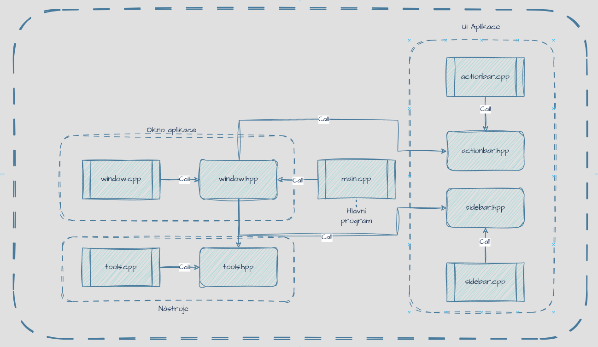

What is SilverTool
SilverTool Prototyp is my first classic application.
t was developed using the Qt framework in C++.
I wanted a small and simple piece of software that could open and read my documentation in one place.
I decided to write the documentation in HTML.
For rendering, I used QWebEngine, which uses the Chromium core for fast web rendering and full support of HTML5 and CSS3.
In this point adding new documents will be easy.
What can it do
It can open web documents with full HTML5, CSS3 and JavaScript support.
Also, it has two tools.
Tools are: Converter for metric and imperial units, and ColorTool for converting between HEX, HSV and RGB.
This tool have specifically three documentation sections: Compilation, C/C++ and Assembly.
Any text in documentation can be copied and used.
It also features an action bar with refresh and back buttons. So, if you decide to edit any documents, you don't have to restart the whole application to see the result.
How it is work
Program has 5 cpp files and 4 hpp files, 7 HTML files, one CSS file and one CMake file.
The structure of the program is simple.
Everything is side by side.
- main.cpp
- window.cpp
- window.hpp
- sidebar.cpp
- sidebar.hpp
- actionbar.cpp
- actionbar.hpp
- tools.cpp
- tools.hpp

main.cpp has only one include and that is #include "window.hpp".
Also, it is stating file.
That mean it has only main function.
Every another cpp file have only implementation and every another hpp file have class declaration.
Specifically window files calling another file, creating window, creating application layout and starting QWebEngine.
I did my best to separate everything in functions, but still it is my first application.
If you want to try this project, reedit it, change it for yourself or just use it as template, you can find it HERE.